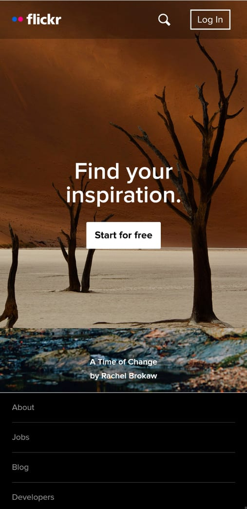

Design Principle
Jovincent Inoc
Rule Of Thirds
Pinterest
Pinterest site hear

Pinterest is a good example of alignment, the mobile view of this site manages to make it looks neat and well ordered even though the width and height of every photo are different from one another, and that is because of the organized alignment they apply on the site which makes it better and cleans the site.
Visual Hierchy
500px
500px site here

500px did a great job of visual hierarchy as you look at the website the first thing that the viewers call attention to is the word "what makes us different followed by the button to sign up which calls the attention of the visitor to sign up for their website.
Fitt's law
Flickr
Flickr site here

Flicker is a great example of Fitt's Law, as you can see on the website the user will primarily choose to start the free trial because it is predictive that the only option for the new user is to click the button "start for free" or to login.